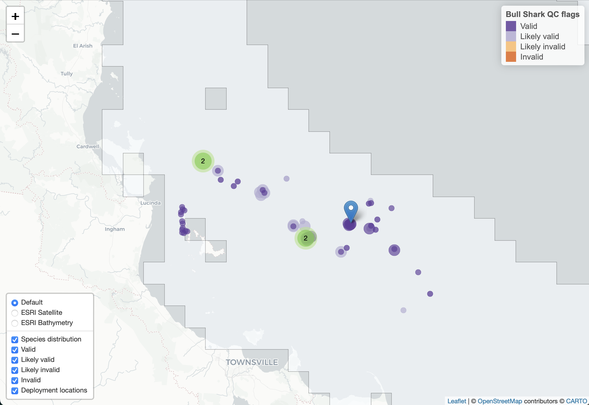

The typical entry point to the remora package will be to
apply quality control (QC) processes to acoustic telemetry detections
data downloaded via the IMOS Australian Animal
Acoustic Telemetry Database. The remora package uses
the QC process described in Hoenner et
al. (2018), with necessary modifications to accommodate the IMOS
database’s data and metadata formats. The QC workflow has been made as
simple as possible, given the constraint of manually downloading the
data and metadata prior to interaction with remora. This
vignette describes the QC workflow.
Typically, users will download four .csv files via the
IMOS Australian Animal
Acoustic Telemetry Database:
1. Transmitter detections data, accessible via the detections page
2. Transmitter deployment metadata, accessible via the transmitters page
3. Receiver deployment metadata, accessible via the receiver deployments page
4. Animal measurements data, downloaded along with either detections or transmitter deployment metadata
Users will tell remora where to find these files by
creating a files list as follows:
files <- list(det = "path_to/IMOS_detections.csv",
rmeta = "path_to/IMOS_receiver_deployment_metadata.csv",
tmeta = "path_to/IMOS_transmitter_deployment_metadata.csv",
meas = "path_to/IMOS_animal_measurements.csv")The detections data, receiver and transmitter metadata files are
required to enable the full QC process, however because of some
redundancy in variables among the detections data and metadata files, a
partial QC can be conducted when one or both metadata files are missing.
In these latter cases, the path for a missing metadata file is set to
rmeta = NULL and/or tmeta = NULL; a warning
will be issued when the QC is run. Similarly, if no animal measurements
data are present the path is set to meas = NULL. The
presence or absence of this latter file does not affect the QC
process.
In situations where tagged animals may be detected across several receiver projects, we recommend downloading the entire IMOS receiver metadata file via the Web App. This file is relatively compact and the single download will save users time by not having to manually determine and download receiver metadata from many individual projects.
runQC() function
The primary function for conducting the QC is the
runQC() function. Let’s start with an example tagging
project included in the remora package by first creating a
files list:
files <- list(det = system.file(file.path("test_data","IMOS_detections.csv"), package = "remora"),
rmeta = system.file(file.path("test_data","IMOS_receiver_deployment_metadata.csv"),
package = "remora"),
tmeta = system.file(file.path("test_data","IMOS_transmitter_deployment_metadata.csv"),
package = "remora"),
meas = system.file(file.path("test_data","IMOS_animal_measurements.csv"),
package = "remora"))We invoke the QC using runQC():
tag_qc <- runQC(files, .parallel = TRUE, .progress = FALSE)where the argument .parallel = TRUE runs the QC in
parallel across the available number of processor cores - 2. This can be
modified using the .ncores argument. If
.parallel = FALSE then the QC is run sequentially, which
can take considerable time but may be more efficient for projects with a
small number of transmitters. The .progress = FALSE
argument turns off the QC progress indicator, it is set to
TRUE (turned on) by default but set to FALSE
here to keep the vignette tidy.
As part of the QC process, a logfile is generated by
runQC to record common issues found in the data and/or
metadata during the QC process. This logfile is saved to the working
directory as QC_logfile.txt. Entries in the logfile provide
some indication of a problem that the user may wish to explore and
follow up as appropriate. An empty logfile indicates the QC process
detected no common data issues, but this is not a guarantee that your
data are problem-free! Simple issues, such as detection or receiver
deployment latitudes in the northern hemisphere, are resolved
automatically and corrected in the QC’d data output.
The QC output object tag_qc is a nested tibble with each
row corresponding to an individual animal using the
transmitter_id, tag_id and
tag_deployment_id as a unique identifier:
## # A tibble: 5 × 2
## # Rowwise: filename
## filename QC
## <chr> <list<tibble[,54]>>
## 1 A69-9002-13807_69918686_69918684 [173 × 54]
## 2 A69-9002-13809_77523181_77523186 [84 × 54]
## 3 A69-9002-13824_93016177_93016182 [77 × 54]
## 4 A69-9002-14762_43669513_43669944 [60 × 54]
## 5 A69-9002-14765_43669525_43669972 [203 × 54]The QC list variable contains the QC’d detections data
and metadata for each individual deployment. The utility function
grabQC() provides a simple method to extract manageable
segments of the QC output for subsequent review and analysis. For
example, we can grab only the basic detection data with the QC flags and
then filter the detections to retain only those flagged as ‘valid’ or
‘likely valid’:
## # A tibble: 597 × 22
## transmitter_id tag_id transmitter_deployment_id tagging_project_name
## <chr> <int> <int> <chr>
## 1 A69-9002-13807 69918686 69918684 Townsville Reefs
## 2 A69-9002-13807 69918686 69918684 Townsville Reefs
## 3 A69-9002-13807 69918686 69918684 Townsville Reefs
## 4 A69-9002-13807 69918686 69918684 Townsville Reefs
## 5 A69-9002-13807 69918686 69918684 Townsville Reefs
## 6 A69-9002-13807 69918686 69918684 Townsville Reefs
## 7 A69-9002-13807 69918686 69918684 Townsville Reefs
## 8 A69-9002-13807 69918686 69918684 Townsville Reefs
## 9 A69-9002-13807 69918686 69918684 Townsville Reefs
## 10 A69-9002-13807 69918686 69918684 Townsville Reefs
## # ℹ 587 more rows
## # ℹ 18 more variables: species_common_name <chr>,
## # species_scientific_name <chr>, detection_datetime <dttm>,
## # receiver_deployment_longitude <dbl>, receiver_deployment_latitude <dbl>,
## # transmitter_sensor_raw_value <dbl>, installation_name <chr>,
## # station_name <chr>, receiver_name <chr>, receiver_deployment_id <dbl>,
## # FDA_QC <dbl>, Velocity_QC <dbl>, Distance_QC <dbl>, …or, to return all detection regardless of QC flag:
dQC <- grabQC(tag_qc, what = "dQC")
dQC## # A tibble: 597 × 22
## transmitter_id tag_id transmitter_deployment_id tagging_project_name
## <chr> <int> <int> <chr>
## 1 A69-9002-13807 69918686 69918684 Townsville Reefs
## 2 A69-9002-13807 69918686 69918684 Townsville Reefs
## 3 A69-9002-13807 69918686 69918684 Townsville Reefs
## 4 A69-9002-13807 69918686 69918684 Townsville Reefs
## 5 A69-9002-13807 69918686 69918684 Townsville Reefs
## 6 A69-9002-13807 69918686 69918684 Townsville Reefs
## 7 A69-9002-13807 69918686 69918684 Townsville Reefs
## 8 A69-9002-13807 69918686 69918684 Townsville Reefs
## 9 A69-9002-13807 69918686 69918684 Townsville Reefs
## 10 A69-9002-13807 69918686 69918684 Townsville Reefs
## # ℹ 587 more rows
## # ℹ 18 more variables: species_common_name <chr>,
## # species_scientific_name <chr>, detection_datetime <dttm>,
## # receiver_deployment_longitude <dbl>, receiver_deployment_latitude <dbl>,
## # transmitter_sensor_raw_value <dbl>, installation_name <chr>,
## # station_name <chr>, receiver_name <chr>, receiver_deployment_id <dbl>,
## # FDA_QC <dbl>, Velocity_QC <dbl>, Distance_QC <dbl>, …The dQC object can form the basis for subsequent
annotation with environmental data (see
vignette('extractEnv'); and
vignette('extractMoor')) and analysis.
The metadata and animal measurements associated with QC’d detections can also be extracted in a compact form (without duplication of records):
tag_meta <- grabQC(tag_qc, what = "tag_meta")
rec_meta <- grabQC(tag_qc, what = "rec_meta")
meas <- grabQC(tag_qc, what = "meas")If a user wishes to work with a simple data.frame containing all the
QC output then the nested tibble can be converted to a flat file using
tidyr::unnest() and dplyr::ungroup() as
follows:
## # A tibble: 597 × 55
## filename transmitter_id tag_id transmitter_deployme…¹ tagging_project_name
## <chr> <chr> <int> <int> <chr>
## 1 A69-9002-1… A69-9002-13807 6.99e7 69918684 Townsville Reefs
## 2 A69-9002-1… A69-9002-13807 6.99e7 69918684 Townsville Reefs
## 3 A69-9002-1… A69-9002-13807 6.99e7 69918684 Townsville Reefs
## 4 A69-9002-1… A69-9002-13807 6.99e7 69918684 Townsville Reefs
## 5 A69-9002-1… A69-9002-13807 6.99e7 69918684 Townsville Reefs
## 6 A69-9002-1… A69-9002-13807 6.99e7 69918684 Townsville Reefs
## 7 A69-9002-1… A69-9002-13807 6.99e7 69918684 Townsville Reefs
## 8 A69-9002-1… A69-9002-13807 6.99e7 69918684 Townsville Reefs
## 9 A69-9002-1… A69-9002-13807 6.99e7 69918684 Townsville Reefs
## 10 A69-9002-1… A69-9002-13807 6.99e7 69918684 Townsville Reefs
## # ℹ 587 more rows
## # ℹ abbreviated name: ¹transmitter_deployment_id
## # ℹ 50 more variables: species_common_name <chr>,
## # species_scientific_name <chr>, CAAB_species_id <int>,
## # WORMS_species_aphia_id <int>, animal_sex <chr>, detection_datetime <dttm>,
## # receiver_deployment_longitude <dbl>, receiver_deployment_latitude <dbl>,
## # receiver_project_name <chr>, installation_name <chr>, station_name <chr>, …The QC’d detections can be visualised as a map using the
plotQC() function. Prior to remora version
0.8-0, plotQC generated a static map of detections
categorised by QC flag. In version 0.8-0, plotQC is now
interactive and renders by default (path = NULL) to a
viewer window in RStudio. Other options to the path
argument include path = "wb" which renders in the default
web browser, if a valid file path is provided then the interactive map
is saved as a self-contained .html file. Interactivity includes the
ability to zoom in and out to reveal more or less detail on the spatial
distribution of detections, and change which QC’d detections are
displayed, map background layers, and colour scheme.
plotQC(tag_qc)
Vignette version 0.0.5 (09 Nov 2023)